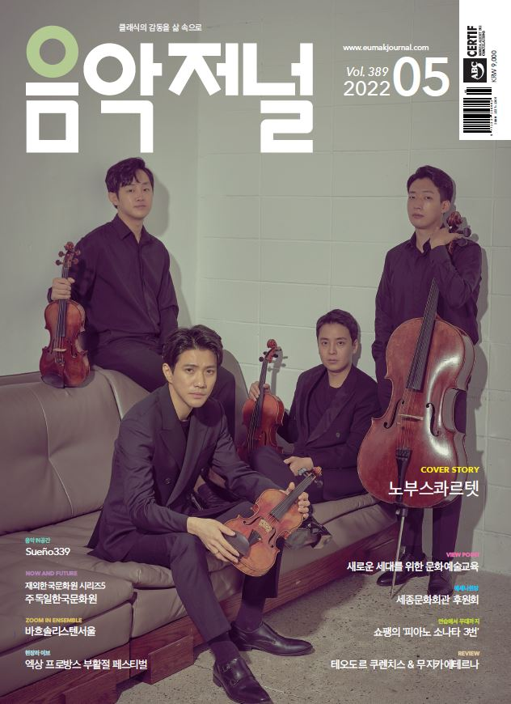

음악저널 contents
vol.389 2022.05
COVER STORY
견고함과 신뢰로 노부스 콰르텟 ― 김희선
가장 완벽한 그래서 가장 어려운 장르인 현악사중주.
지난 15년 동안 쌓아 온 것은 단순한 커리어 이상의 의미를 가지고 있다.
이들의 다음 도전은 베토벤 현악사중주를 향하고 있다.
CONCERT STAGE
다시 초심으로 조재혁 쇼팽 앨범발매 기념 리사이틀 ― 김희선
코리안 윈드 오케스트라 어린이날 100주년 기념음악회 ― 소파(小波) 방정환 ― 이세은
음(音)으로 써내려 간 사랑 김세일 X 마르쿠스 하둘라 두오 리사이틀 ― 이세은
VIEW POINT
즐거운 나눔의 장 한독클래식음악협회 대표 피아니스트 공민채 ― 이세은
지치지 않는 음악 탐구 피아니스트 조희연 ― 허유진
마음을 담은 언어, 음악으로 피어나다 소프라노 김형순 ― 이세은
그의 서정(抒情)을 담아내다 바리톤 이응광 ― 허유진